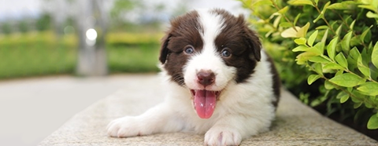
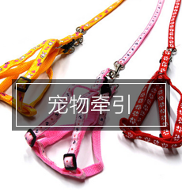

热门幼犬·HOTDOG
宠物和人类是一家人
-
泰迪犬
泰迪狗是非常受欢迎的体型较小的宠物伴侣。欢快，好动，聪明的特点让很多女士们选择泰迪狗做宠物。

-
萨摩犬
摩耶德犬有着非常引人注目的外表：雪白的被毛，微笑的脸和黑色而聪明的眼睛，是现在的犬中最漂亮的一种。萨摩耶德犬天生聪明，对主人绝对忠诚。。

-
金毛犬
金毛比较耐寒，适合家居生活，贪玩、活跃而不爱吵闹，非常容易训练，容易与别的犬相处，是初次养狗人的首选。

-
拉布拉多犬
拉布拉多犬性温和，体大，爱贪吃，行动稳健，眼神柔情。在众狗狗里拉布拉多犬是个很温顺、乖巧的孩子。

-
边境牧羊犬
边境牧羊犬是世界上智商最高的犬，教他学习一个新知识不需要超过5次他就能完成，在主人的教导下也能学会很多东西，不过它会尽可能地与你斗智斗勇。
-
阿拉斯加
一般认为阿拉斯加雪橇犬相对于哈士奇更加敦厚和稳重，阿拉斯加雪橇犬忠实，能力强。是优秀的警备犬和工作犬，也是富有感情的家庭犬。

-
哈士奇
最大的优势莫过于它漂亮冷酷的外型，几乎每个见过小哈的人，都会发自内心的喜爱，也许说明了人类对狼的一种虏获心理吧。

宠物用品·PET SUPPLIES
任何需求都是您对宠物的爱


- 

爱宠聚焦·PET FOCUS
更多呵护、更多互动、更多爱